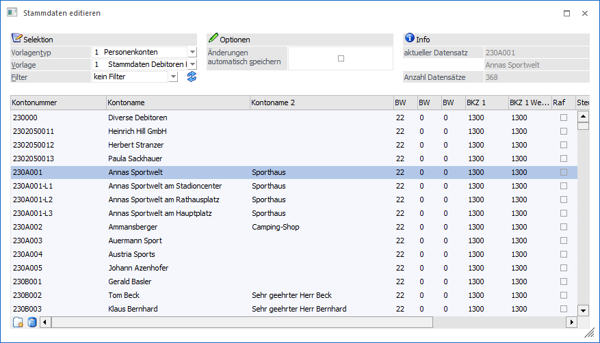
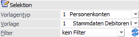
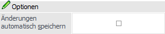
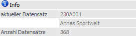
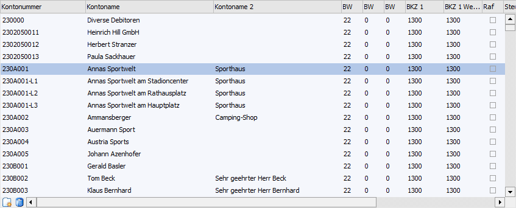
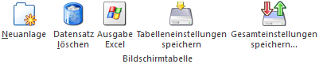

Im Menüpunkt
1 WinLine FIBU und WinLine FAKT
1 Stammdaten
1 Stammdaten editieren
können auf ergonomische Weise die wichtigsten Stammdatenbereiche überarbeitet werden. Voraussetzung hierfür ist, dass im Programm "Vorlagen Anlage - Export/Import-Vorlagen" (WinLine START - Vorlagen - Vorlagen Anlage) entsprechende EXIM-Vorlagen angelegt wurden. Mit Hilfe der Vorlagen wird bestimmt, welche Felder bearbeitet werden können.
Hinweis
Im Programm "Stammdaten editieren" wird die Konsolidierung im Hauptmandanten für Personenkonten und Sachkonten verwendet. Voraussetzung dafür ist die Hinterlegung einer Vorlage in den Konsolidierungs-Einstellungen. Bei der Neuanlage eines Kontos öffnet sich das Mandanten-/Jahres-Selektionsfenster. Beim Ändern eines Kontos werden die Submandanten aktualisiert. Das Löschen über den Button "Löschen" erfolgt ebenfalls mandantenübergreifend.

Folgende Eingabefelder, Einstellungen und Informationen stehen zur Verfügung:
Selektion

Ø Vorlagetyp
Aus der Auswahlliste wird der Vorlagentyp ausgewählt, d.h. welche Stammdaten editiert werden sollen. Folgende Möglichkeiten stehen zur Verfügung:
ü 1 - Personenkonten
ü 2 - Sachkonten
ü 3 - Interessenten (nur in WinLine FAKT)
ü 4 - Artikel (nur in WinLine FAKT)
Ø Vorlage
Aus der Auswahlliste kann die Vorlage, des zuvor definierten Vorlagentyps, ausgewählt werden. Durch die Vorlage wird der Inhalt der Tabelle bestimmt und somit auch, welche Felder geändert werden können.
Ø Filter
Aus der Auswahlliste kann ein Filter gewählt werden, mit dem die Einschränkung bzw. die Sortierung der zu bearbeitenden Daten vorgenommen werden kann. Die Auswahlliste zeigt hierbei nur jene Filter an, die bereits für den ausgewählten Datenbereich (Feld "Vorlagentyp") angelegt wurden.
Ø Filter bearbeiten
Durch Anklicken des Buttons "Filter bearbeiten" kann ein neuer Filter angelegt bzw. ein bestehender Filter editiert werden. Dazu wird der Filter-Assistent geöffnet, der durch die einzelnen Eingaben führt. Details dazu finden Sie im Kapitel Filter - Assistent. Wird ein neuer Filter angelegt, wird er automatisch ins Eingabefenster gestellt und kann natürlich durch einen anderen aus der Auswahlbox ersetzt werden.
Optionen

Ø Änderungen automatisch speichern
Wurde die Checkbox "Änderungen automatisch speichern" aktiviert, so wird jeder Datensatz nach Verlassen der Zeile sofort gespeichert. Ist diese Checkbox inaktiv, dann wird beim Verlassen der Zeile die Meldung "Änderung an xxx speichern?" angezeigt (xxx => Nummer des Datensatzes). Diese Meldung erscheint nur dann, wenn Änderungen vorgenommen wurden.
Info

Ø aktueller Datensatz
Hier wird der aktuelle Datensatz, der gerade bearbeitet wird, angezeigt.
Ø Anzahl Datensätze
Hier wird die Anzahl der Datensätze angezeigt, die aufgrund der Vorlage bzw. des Filters in die Tabelle geladen wurden.
Tabelle "Stammdaten"

In der Tabelle werden nach Anwahl des Buttons "Anzeigen" alle zur Selektion passenden Stammdaten angezeigt und können editiert werden. Welche Spalten in der Tabelle dargestellt werden ist abhängig von der gewählten Vorlage.
Änderungen werden automatisch gespeichert, wenn der Fokus auf einen anderen Datensatz gelegt wird.
Tabellenbuttons

Ø Neuanlage
Durch Anklicken des Buttons "Neuanlage" kann ein neuer Datensatz angelegt werden.
Ø Datensatz löschen
Durch Anwahl des Buttons "Datensatz löschen" kann der gerade aktive Datensatz gelöscht werden. Dieses ist nur möglich, sofern keine Bewegungsdaten, z.B. Buchungen oder Belege, vorhanden sind.
Ø Ausgabe Excel
Durch Anwahl des Buttons "Ausgabe Excel" wird der Inhalt der Tabelle an Microsoft Excel übergeben.
Ø Tabelleneinstellungen speichern
Die Spalten einer Tabelle können grundsätzlich an beliebige Positionen verschoben, bzw. in der Breite entsprechend angepasst werden. Durch Anwahl des Buttons "Tabelleneinstellungen speichern" werden die Einstellungen benutzerspezifisch gespeichert und bei dem nächsten Aufruf des Programmpunktes wieder vorgeschlagen.
Ø Gesamteinstellungen speichern
Im Gegensatz zu "Tabelleneinstellungen speichern" können mit "Gesamteinstellungen speichern" mehrere Tabellenaufbauten gespeichert und nach Wunsch geladen werden. Zusätzlich werden Sonderfunktionen der Tabelle (z.B. "Spalte gruppieren") ebenfalls bei der Speicherung bedacht.
Buttons
Ø Anzeigen
Durch Anklicken des Buttons "Anzeigen" werden alle Datensätze, die der Vorlage und dem Filter entsprechen, in der Tabelle angezeigt und können dort editiert werden.
Ø Ende
Durch Drücken des Buttons "Ende" bzw. der Taste ESC wird das Fenster geschlossen.